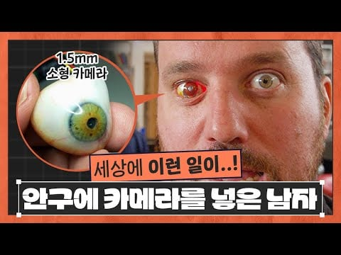
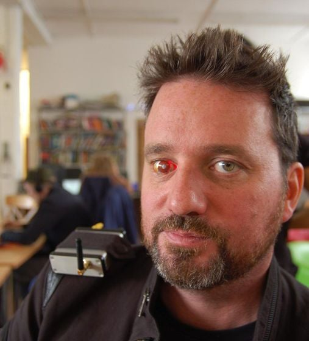
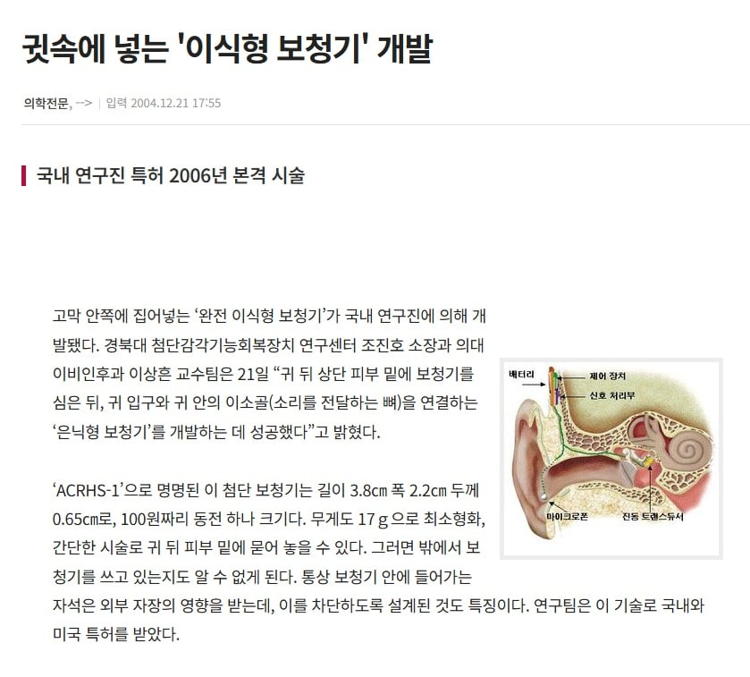

눈에 카메라 이식하고
귀에 이어폰 심고
바로 ai가 보여주고 들려주는 정보 그대로 보고 들을 수 있는 시대가 오면
시험이라는거 자체가 무용지물이 될 수 밖에 없음



눈에 카메라 이식하고
귀에 이어폰 심고
바로 ai가 보여주고 들려주는 정보 그대로 보고 들을 수 있는 시대가 오면
시험이라는거 자체가 무용지물이 될 수 밖에 없음

싸이버펑크 그자체네
중국처럼 Emp 터트리면되는데.. 참..
뇌 스캐닝해서 뽑겠지
사이버 펑크로 내 아픈 허리에 산데비스탄 박아줬으면
산데비스탄 속도로 아픈거 아님?
ㅋㅋㅋㅋㅋ 30배 더 오래 아프기!
박아서 해결하는 방법이 있긴 함
https://www.dogdrip.net/629108884
키로시
시험 안보면 좋지
이렇게 되면 진짜로 공부하는 사람들이 없어지는거니까
적국이 재밍터트리는거 대비해서 필수적으로 의료인력같은 사람들은 국가가 따로 확보해둬야 하나
인력을 확보할 필요가 없지 ai기술과 로봇기술을 확보하는 방향으로 갈듯
솔직하게 왼쪽귀에 이명 심한데 빨리 이어폰 심고 싶다...
난 오른쪽 귀..
근데 너도 소리 잘 안 들림??
난 삐 하는 고주파음이 기존 소리에 추가로 들림. 컨디션 안 좋으면 더 심하게 들리고
인플란트 최종은 뇌 (총몽)
키로시
모든질병 15년내 극복가능, 다만 탈모는 몰루?
유전성 탈모는 질병이 아니라
유전자의 영역이라 그렇다곤 하더라..
알고싶지 않았어
기초적 임플란트다
뉴로맨서(1984) 보면 거기 귀 뒤에 바이오칩 꽂아서 능력 업그레이드하는 설정 나오는데 진짜 글케 되겠네
"영광스러운 진화에 동참하라"
넷러너로 카운터 가능
솔까 눈하나 버리고 설대치대 갈수있으면 안할래?
난 안할래
저거는 눈 버리는게 아니라 렌즈처럼 눈깔 위에 씌우는거 같은데


니케 만들어줘
금속탐지기에 걸리는경우 면접 불가 해야되게 ㅅ군
기초적인 임플란트...